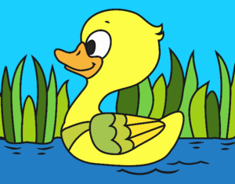
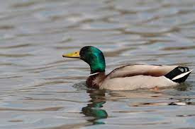
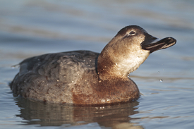
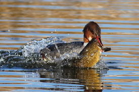
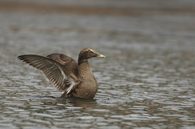

Definition
« Canard » est un terme générique qui désigne des oiseaux aquatiques ansériformes, au
cou court, au large bec jaune aplati, aux très courtes pattes palmées et aux longues ailes pointues,
domestiqués ou non.
Denomination
- Le mâle adulte est appelé canard ou malard
- La femelle adulte est appelée cane
- La jeune femelle est appelée canette
- L'oisillon est appelé caneton ou canardeau
- Le juvénile, ne maîtrisant pas encore son vol, est appelé canardeau ou halbran
Types
Les canards de surface (ou barboteurs)

Les Anatini sont une tribu de canards, les oiseaux ansériformes de la sous-famille des anatinés.
Ce sont ceux que l'on qualifie de canards de surface ou canards barboteurs. Parmi celle-ci on
trouve les espèces les plus familières de l'hémisphère nord. Dans d'anciennes classification,
cette tribu est élevée au rang de la sous-famille Anatinae.
Ces canards sont nommés de surface car ils trouvent principalement leur nourriture à la surface
des étendues d'eau. Ils plongent rarement et seulement à mi-corps, la queue à la verticale et
les pattes hors de l'eau pour atteindre le fond et fouiller dans la vase avec leur bec.
Les canards plongeurs

Les Aythyini sont une tribu de canards, les oiseaux ansériformes de la sous-famille des
anatinés. Ce sont ceux que l'on qualifie de canards plongeurs. Les canards marins, qui sont
également plongeurs mais en mer, forment aujourd'hui la tribu Mergini. Dans d'anciennes
classifications, cette tribu est élevée au rang de la sous-famille Aythyinae.
Ces canards sont nommés plongeurs car ils se nourrissent principalement en plongeant sous l'eau.
Les nettes rousses peuvent rester 20 secondes sous l'eau. Certaines espèces comme les fuligules
par exemple, se nourrissent parfois en surface, comme les canards de surface.
Les canards piscivores

Les canards piscivores sont appelés ainsi du fait de leur nourriture, essentiellement constituée
de poissons. Ce sont en fait des plongeurs très habiles, qui s'immergent avec rapidité et vont
jusqu'à 3 ou 4 mètres de fond avec une grande vélocité. Ils ont pour cela un corps allongé, des
palmes bien larges, un bec mince terminé par un crochet et pourvu de « dents » pointues en lieu
et place des lamelles des autres canards. Ils peuvent rester en apnée pendant une minute voire
davantage.
Les canards marins (ou plongeurs marins)

Les Mergini sont une tribu de canards, les oiseaux ansériformes de la sous-famille des anatinés.
Ce sont ceux que l'on qualifie de canards marins ou canards plongeurs marins. Les simples
canards plongeurs, forment la tribu Aythyini. Dans d'anciennes classifications, ces canards
forment la sous-famille des merginés (Merginae).